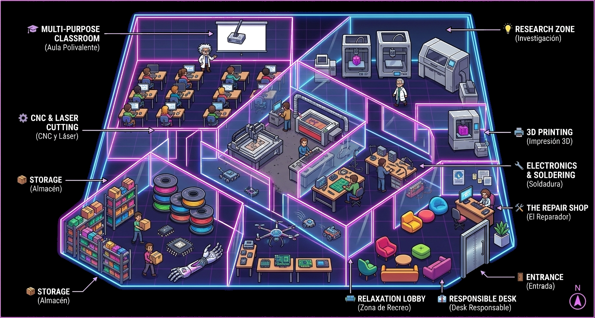

🖨️
Impresión 3D
Impresoras FDM, SLA de resina y una impresora metálica para prototipos funcionales, piezas de precisión y maquetas de proyectos de fin de grado, o just for fun!
ETSIT · UPM · SÓTANO EDIFICIO A
Donde las ideas se sueldan, se imprimen y cobran vida.
Un nuevo espacio de fabricación digital y prototipado abierto a estudiantes, profesorado y empresas. Impresión 3D, CNC, láser, electrónica y mucho más, en pleno campus de Telecomunicación.
// PARA EMPEZAR
Un Fab Lab (laboratorio de fabricación digital) es un espacio para jugar, crear, aprender e inventar. Da acceso al entorno, las habilidades, los materiales y la tecnología avanzada necesarios para fabricar casi cualquier cosa.
Existe una red internacional de más de 1.750 Fab Labs en más de 100 países, impulsada por la Fab Foundation y recogida en fablabs.io: una comunidad abierta de fabricantes, artistas, científicas, ingenieros, docentes y estudiantes que comparten herramientas y conocimiento.
🌍
Aún no somos red oficial
Estamos construyendo el espacio durante 2026. Nuestro objetivo es cumplir los requisitos e incorporarnos a la red internacional de fablabs.io en 2027.
🚧 En construcción · Rumbo a 2027// EL PROYECTO
En el sótano del Edificio A de la ETSIT UPM nace un espacio que llevaba años esperando su momento: el nuevo laboratorio de fabricación digital y prototipado de la escuela. Un lugar pensado por y para la comunidad universitaria, donde el conocimiento teórico de las aulas se transforma en circuitos soldados, piezas impresas y prototipos funcionales.
El objetivo es sencillo pero ambicioso: dotar a estudiantes de todas las titulaciones, a los grupos de investigación y a las asociaciones estudiantiles de un taller compartido, moderno y abierto, equipado con tecnología que hasta ahora solo se veía en la industria.
Gracias a la colaboración entre la escuela, los institutos de investigación y empresas patrocinadoras, este proyecto convertirá un espacio infrautilizado en el corazón "maker" de la ETSIT.
+300 m²
de nuevo espacio maker
4
zonas especializadas
6+
asociaciones implicadas
3
titulaciones destacadas
// ¿CÓMO SERÁ EL FABLAB?

Este plano es un boceto teórico inspirado en el layout de referencia "Chicago" de la Fab Foundation. Todavía no contamos con los planos definitivos, ¡pero quedará igual más chulo!
// ZONAS DEL LABORATORIO
Impresoras FDM, SLA de resina y una impresora metálica para prototipos funcionales, piezas de precisión y maquetas de proyectos de fin de grado, o just for fun!
Fresado CNC y corte/grabado láser para madera, metacrilato y placas de circuito, ideal para carcasas, attrezzo y prototipado rápido.
Estaciones de soldadura, microscopios y herramientas de electrónica para montar, reparar y depurar placas PCB y prototipos electrónicos, hacer circuitos de radiofrecuencia...
Espacio de formación para talleres, cursos, charlas de empresas patrocinadoras y sesiones de introducción a herramientas de diseño y fabricación digital.
// PARA LAS ASOCIACIONES
El FabLab es un espacio que complementa perfectamente a nuestros clubes de alumnos. Pueden usarlo para talleres, construir material, attrezzo para sus obras de teatro, personalizar su propio merchandising (llaveros, posavasos...). ¿Eres del deportivo?, ¡pues imprime un muñeco para el futbolín! ¿Del Delta? ¡Arregla ya ese altavoz! ¿Del Ícaro? ¡Diseña tu dron para grabarte escalando! ¿Del Euri? ¡Imprímete unos premios para las mejores empresas! Seas del club que seas, seguro que FabLab tiene un rincón para ti.
El FabLab es el lugar ideal para organizar hackatones y maratones de innovación. Con acceso a herramientas de fabricación digital, los participantes pueden prototipar rápidamente sus ideas, desde dispositivos electrónicos hasta modelos físicos. Además, el laboratorio ofrece un entorno colaborativo donde los equipos pueden intercambiar conocimientos y habilidades, fomentando la creatividad y la resolución de problemas en tiempo real.
// SOSTENIBILIDAD, ¡AQUÍ NO SE TIRA NA'!
En la filosofía maker, DIY, todo se repara. El FabLab es tu rincón para alargar la vida de los aparatos electrónicos. ¿Se te ha roto la cafetera o la tostadora y no te atreves a meterle mano? Trae tus dispositivos rotos y el material y junto a compañeros voluntarios, aprende a diagnosticar y reparar fallos reales.
Menos residuos electrónicos, más habilidades prácticas y una comunidad que cuida su tecnología en lugar de tirarla a la primera avería. ¡Que no te digan tus padres que ya no se arregla nada y que solo se compra nuevo, aquí se repara!
// IMPACTO ACADÉMICO
El FabLab es un espacio de aprendizaje práctico que complementa la formación teórica de los Grados y Másteres de la ETSIT. Los estudiantes pueden aplicar sus conocimientos en proyectos reales, desarrollar prototipos funcionales y adquirir habilidades técnicas y frikear, darle un boost a sus Trabajos de Fin de Grado y Máster, o incluso crear sus propios proyectos personales. Además, el laboratorio fomenta la colaboración entre estudiantes de diferentes titulaciones, promoviendo la innovación interdisciplinar.
Diseño y fabricación de prótesis funcionales impresas en 3D, dispositivos wearable para monitorización de constantes vitales y carcasas biocompatibles para sensores médicos.
Sistemas Linux embebido para proyectos de IoT y edge computing, con carcasas a medida impresas o cortadas en el laboratorio para sensores y nodos de recogida de datos.
Montaje y soldadura de placas PCB propias, integración de antenas y bancos de pruebas de radiofrecuencia para proyectos de comunicaciones inalámbricas.
// VISITAS A LA ESCUELA
¡Que no pase un chiquillo por la ETSIT sin ver el FabLab y se imprima su muñeco! El laboratorio es un punto de interés para cualquiera de las múltiples visitas que se organizan a la escuela, desde institutos hasta grupos de estudiantes universitarios de otras facultades, campamentos de verano... Los visitantes pueden conocer de primera mano las posibilidades de la fabricación digital y la cultura maker, y hacer de su visita una experiencia interactiva y educativa.
// PATROCINIO
Institutos de investigación de la UPM y empresas líderes del sector tecnológico pueden colaborar en la puesta en marcha del laboratorio con distintos niveles de patrocinio.
🔷
🔶
🏆
Empresas y cátedras interesadas en colaborar:
// ÚNETE Y APOYA
Contáctanos si quieres apoyar el proyecto de alguna manera: donar material, patrocinar, organizar concursos, talleres, charlas o hackatones, descuentos en material fungible para nuestros usuarios, o cualquier otra idea que se te ocurra. ¡Estamos abiertos a propuestas!